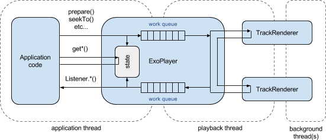

-
public interface ExoPlayerAn extensible media player exposing traditional high-level media player functionality, such as the ability to prepare, play, pause and seek.Topics covered here are:
Assumptions and player construction
The implementation is designed to make no assumptions about (and hence impose no restrictions on) the type of the media being played, how and where it is stored, or how it is rendered. Rather than implementing the loading and rendering of media directly,
ExoPlayerinstead delegates this work to one or moreTrackRenderers, which are injected when the player is prepared. HenceExoPlayeris capable of loading and playing any media for which aTrackRendererimplementation can be provided.MediaCodecAudioTrackRendererandMediaCodecVideoTrackRenderercan be used for the common cases of rendering audio and video. These components in turn require an upstreamSampleSourceto be injected through their constructors, where upstream is defined to denote a component that is closer to the source of the media. This pattern of upstream dependency injection is actively encouraged, since it means that the functionality of the player is built up through the composition of components that can easily be exchanged for alternate implementations. For example aSampleSourceimplementation may require a further upstream data loading component to be injected through its constructor, with different implementations enabling the loading of data from various sources.Threading model
The figure below shows the
ExoPlayerthreading model.
- It is recommended that instances are created and accessed from a single application thread. An application's main thread is ideal. Accessing an instance from multiple threads is discouraged, however if an application does wish to do this then it may do so provided that it ensures accesses are synchronized.
- Registered
ExoPlayer.Listeners are invoked on the thread that created theExoPlayerinstance. - An internal playback thread is responsible for managing playback and invoking the
TrackRenderers in order to load and play the media. TrackRendererimplementations (or any upstream components that they depend on) may use additional background threads (e.g. to load data). These are implementation specific.
Player state
The components of an
ExoPlayer's state can be divided into two distinct groups. State accessed bygetSelectedTrack(int)andgetPlayWhenReady()is only ever changed by invoking the player's methods, and are never changed as a result of operations that have been performed asynchronously by the playback thread. In contrast, the playback state accessed bygetPlaybackState()is only ever changed as a result of operations completing on the playback thread, as illustrated below.
The possible playback state transitions are shown below. Transitions can be triggered either by changes in the state of the
TrackRenderers being used, or as a result ofprepare(TrackRenderer[]),stop()orrelease()being invoked.
-
-
Nested Class Summary
Nested Classes Modifier and Type Interface and Description static interfaceExoPlayer.ExoPlayerComponentA component of anExoPlayerthat can receive messages on the playback thread.static classExoPlayer.FactoryA factory for instantiating ExoPlayer instances.static interfaceExoPlayer.ListenerInterface definition for a callback to be notified of changes in player state.
-
Field Summary
Fields Modifier and Type Field and Description static intSTATE_BUFFERINGThe player is prepared but not able to immediately play from the current position.static intSTATE_ENDEDThe player has finished playing the media.static intSTATE_IDLEThe player is neither prepared or being prepared.static intSTATE_PREPARINGThe player is being prepared.static intSTATE_READYThe player is prepared and able to immediately play from the current position.static intTRACK_DEFAULTA value that can be passed as the second argument tosetSelectedTrack(int, int)to select the default track.static intTRACK_DISABLEDA value that can be passed as the second argument tosetSelectedTrack(int, int)to disable the renderer.static longUNKNOWN_TIMERepresents an unknown time or duration.
-
Method Summary
All Methods Instance Methods Abstract Methods Modifier and Type Method and Description voidaddListener(ExoPlayer.Listener listener)Register a listener to receive events from the player.voidblockingSendMessage(ExoPlayer.ExoPlayerComponent target, int messageType, Object message)Blocking variant ofsendMessage(ExoPlayerComponent, int, Object)that does not return until after the message has been delivered.intgetBufferedPercentage()Gets an estimate of the percentage into the media up to which data is buffered.longgetBufferedPosition()Gets an estimate of the absolute position in milliseconds up to which data is buffered.longgetCurrentPosition()Gets the current playback position in milliseconds.longgetDuration()Gets the duration of the track in milliseconds.LoopergetPlaybackLooper()Gets theLooperassociated with the playback thread.intgetPlaybackState()Returns the current state of the player.booleangetPlayWhenReady()Whether playback will proceed whengetPlaybackState()==STATE_READY.intgetSelectedTrack(int rendererIndex)Returns the index of the currently selected track for the specified renderer.intgetTrackCount(int rendererIndex)Returns the number of tracks exposed by the specified renderer.MediaFormatgetTrackFormat(int rendererIndex, int trackIndex)Returns the format of a track.booleanisPlayWhenReadyCommitted()Whether the current value ofgetPlayWhenReady()has been reflected by the internal playback thread.voidprepare(TrackRenderer... renderers)Prepares the player for playback.voidrelease()Releases the player.voidremoveListener(ExoPlayer.Listener listener)Unregister a listener.voidseekTo(long positionMs)Seeks to a position specified in milliseconds.voidsendMessage(ExoPlayer.ExoPlayerComponent target, int messageType, Object message)Sends a message to a specified component.voidsetPlayWhenReady(boolean playWhenReady)Sets whether playback should proceed whengetPlaybackState()==STATE_READY.voidsetSelectedTrack(int rendererIndex, int trackIndex)Selects a track for the specified renderer.voidstop()Stops playback.
-
-
-
Field Detail
-
STATE_IDLE
static final int STATE_IDLE
The player is neither prepared or being prepared.- See Also:
- Constant Field Values
-
STATE_PREPARING
static final int STATE_PREPARING
The player is being prepared.- See Also:
- Constant Field Values
-
STATE_BUFFERING
static final int STATE_BUFFERING
The player is prepared but not able to immediately play from the current position. The cause isTrackRendererspecific, but this state typically occurs when more data needs to be buffered for playback to start.- See Also:
- Constant Field Values
-
STATE_READY
static final int STATE_READY
The player is prepared and able to immediately play from the current position. The player will be playing ifgetPlayWhenReady()returns true, and paused otherwise.- See Also:
- Constant Field Values
-
STATE_ENDED
static final int STATE_ENDED
The player has finished playing the media.- See Also:
- Constant Field Values
-
TRACK_DISABLED
static final int TRACK_DISABLED
A value that can be passed as the second argument tosetSelectedTrack(int, int)to disable the renderer.- See Also:
- Constant Field Values
-
TRACK_DEFAULT
static final int TRACK_DEFAULT
A value that can be passed as the second argument tosetSelectedTrack(int, int)to select the default track.- See Also:
- Constant Field Values
-
UNKNOWN_TIME
static final long UNKNOWN_TIME
Represents an unknown time or duration.- See Also:
- Constant Field Values
-
-
Method Detail
-
getPlaybackLooper
Looper getPlaybackLooper()
Gets theLooperassociated with the playback thread.- Returns:
- The
Looperassociated with the playback thread.
-
addListener
void addListener(ExoPlayer.Listener listener)
Register a listener to receive events from the player. The listener's methods will be invoked on the thread that was used to construct the player.- Parameters:
listener- The listener to register.
-
removeListener
void removeListener(ExoPlayer.Listener listener)
Unregister a listener. The listener will no longer receive events from the player.- Parameters:
listener- The listener to unregister.
-
getPlaybackState
int getPlaybackState()
Returns the current state of the player.- Returns:
- One of the
STATEconstants defined in this interface.
-
prepare
void prepare(TrackRenderer... renderers)
Prepares the player for playback.- Parameters:
renderers- TheTrackRenderers to use. The number of renderers must match the value that was passed to theExoPlayer.Factory.newInstance(int, int, int)method.
-
getTrackCount
int getTrackCount(int rendererIndex)
Returns the number of tracks exposed by the specified renderer.- Parameters:
rendererIndex- The index of the renderer.- Returns:
- The number of tracks.
-
getTrackFormat
MediaFormat getTrackFormat(int rendererIndex, int trackIndex)
Returns the format of a track.- Parameters:
rendererIndex- The index of the renderer.trackIndex- The index of the track.- Returns:
- The format of the track.
-
setSelectedTrack
void setSelectedTrack(int rendererIndex, int trackIndex)Selects a track for the specified renderer.- Parameters:
rendererIndex- The index of the renderer.trackIndex- The index of the track. A negative value or a value greater than or equal to the renderer's track count will disable the renderer.
-
getSelectedTrack
int getSelectedTrack(int rendererIndex)
Returns the index of the currently selected track for the specified renderer.- Parameters:
rendererIndex- The index of the renderer.- Returns:
- The selected track. A negative value or a value greater than or equal to the renderer's track count indicates that the renderer is disabled.
-
setPlayWhenReady
void setPlayWhenReady(boolean playWhenReady)
Sets whether playback should proceed whengetPlaybackState()==STATE_READY. If the player is already in this state, then this method can be used to pause and resume playback.- Parameters:
playWhenReady- Whether playback should proceed when ready.
-
getPlayWhenReady
boolean getPlayWhenReady()
Whether playback will proceed whengetPlaybackState()==STATE_READY.- Returns:
- Whether playback will proceed when ready.
-
isPlayWhenReadyCommitted
boolean isPlayWhenReadyCommitted()
Whether the current value ofgetPlayWhenReady()has been reflected by the internal playback thread.- Returns:
- True if the current value has been reflected. False otherwise.
-
seekTo
void seekTo(long positionMs)
Seeks to a position specified in milliseconds.- Parameters:
positionMs- The seek position.
-
stop
void stop()
Stops playback. UsesetPlayWhenReady(false)rather than this method if the intention is to pause playback.Calling this method will cause the playback state to transition to
STATE_IDLE. The player instance can still be used, andrelease()must still be called on the player if it's no longer required.Calling this method does not reset the playback position. If this player instance will be used to play another video from its start, then
seekTo(0)should be called after stopping the player and before preparing it for the next video.
-
release
void release()
Releases the player. This method must be called when the player is no longer required.The player must not be used after calling this method.
-
sendMessage
void sendMessage(ExoPlayer.ExoPlayerComponent target, int messageType, Object message)
Sends a message to a specified component. The message is delivered to the component on the playback thread. If the component throws aExoPlaybackException, then it is propagated out of the player as an error.- Parameters:
target- The target to which the message should be delivered.messageType- An integer that can be used to identify the type of the message.message- The message object.
-
blockingSendMessage
void blockingSendMessage(ExoPlayer.ExoPlayerComponent target, int messageType, Object message)
Blocking variant ofsendMessage(ExoPlayerComponent, int, Object)that does not return until after the message has been delivered.- Parameters:
target- The target to which the message should be delivered.messageType- An integer that can be used to identify the type of the message.message- The message object.
-
getDuration
long getDuration()
Gets the duration of the track in milliseconds.- Returns:
- The duration of the track in milliseconds, or
UNKNOWN_TIMEif the duration is not known.
-
getCurrentPosition
long getCurrentPosition()
Gets the current playback position in milliseconds.- Returns:
- The current playback position in milliseconds.
-
getBufferedPosition
long getBufferedPosition()
Gets an estimate of the absolute position in milliseconds up to which data is buffered.- Returns:
- An estimate of the absolute position in milliseconds up to which data is buffered,
or
UNKNOWN_TIMEif no estimate is available.
-
getBufferedPercentage
int getBufferedPercentage()
Gets an estimate of the percentage into the media up to which data is buffered.- Returns:
- An estimate of the percentage into the media up to which data is buffered. 0 if the duration of the media is not known or if no estimate is available.
-
-